Attention is the gate to memory. Somebody is holding it open for a living. Neuroscientist Dr. Sahar Yousef on how to shut it.
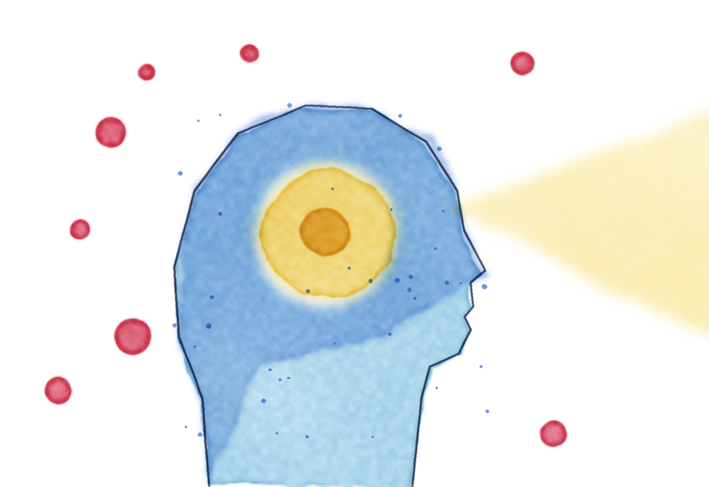
Attention and memory are one system: if it never gets your attention, it never becomes a memory. Your attention is being engineered away, and the same neuroscience works in reverse.
Knowledge workers last about 47 seconds on one screen. Switching between tasks made Steven about 60% slower.
II. The causeMore stimulation, less friction, less satisfaction. Tech copied the recipe that got us hooked on sugar.
III. The fixSleep, then less noise, then more signal. Grayscale, VIP-only alerts, focus sprints.
Scroll for the full explainer ↓ · In a hurry? Jump to the one-card version ↓
Steven called himself a “very proud context switcher.” So she tested him on camera. He wrote “I'm a great multitasker” and the numbers 1 to 20, first one line at a time, then alternating: letter, number, letter, number. The version below takes a minute.
Round 1: tap the letters A to J, then the numbers 1 to 10. Round 2: alternate, A 1 B 2 C 3 and so on. Tap as fast as you can. The clock starts on your first tap.
Steven on the show: 31 s focused; switching, he reached only 8 in 30 s.
This is a toy. Yousef's institute offers a free attention assessment at mmminstitute.org. She wants people checking their minds the way they check their blood.
Steven finished the first round in 31 seconds. In the switching round, after 30 seconds he had only reached the number 8. “I forgot how to count,” he said mid-test, and “where was I?” By his own math, he was working about 60% slower.
Before any tips, one law of biology that changes how you see every notification.
Yousef runs the Becoming Superhuman Lab at UC Berkeley. She studies how the brain rewires itself, with the goal of making people sharper. Then she noticed she spends most of her time on something far more basic. “Forget becoming superhuman,” she says. “We just need to become human.”
The most common complaint she hears is brain fog. One CEO she worked with told her something Yousef never forgot: “I can hear my own thoughts again.”
To understand why that happens, start with how attention and memory are wired together.
Every second, your senses take in far more than you can use. About a third of the cortex is devoted to looking and listening. The brain evolved to watch for predators, so it notices anything that moves or makes noise.
Attention is a narrow gate. Yousef calls the brain a monotasking machine. It can only focus on one thing at a time.
“You cannot remember anything that you do not attend to.” Only what passes the gate can become memory. And another word for memory is learning.
Now add pings, buzzes, badges and open tabs. They crowd the gate. Less gets through, so less is remembered. In Yousef's words, any distraction that cuts your focus is also cutting your memory.
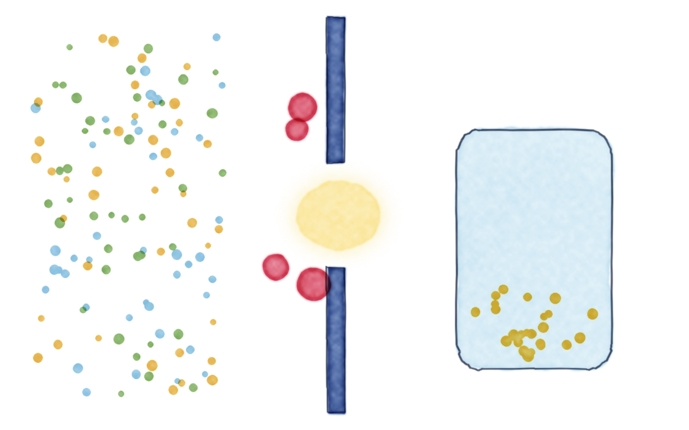
Attention and memory… it's impossible to divorce those concepts from one another. You cannot remember anything that you do not attend to.
Yousef used to shadow executives for days before redesigning how they worked. One case she still talks about. It was a boss at a Fortune 10 company, working on a board deck in his glass office.
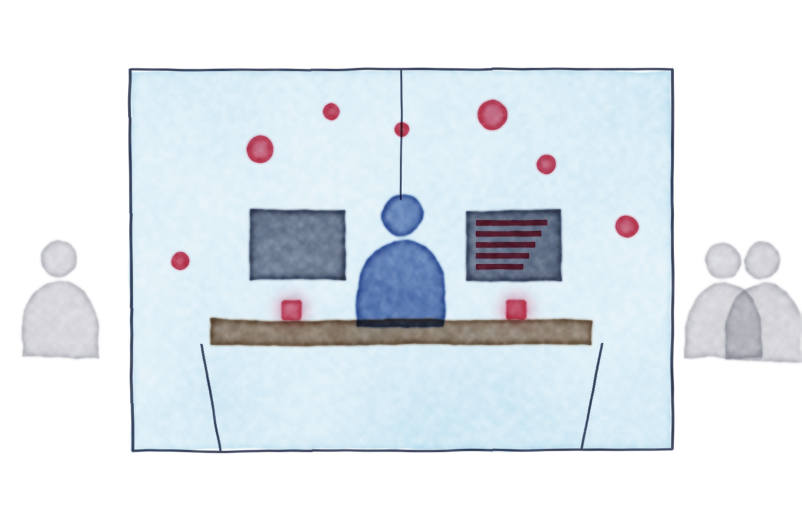
Inbox open Work phone Personal phone Watch buzz Walking past Walking past Chief of staff: “Don't forget…”A very smart person who controls billions of dollars, assembling data for a big board decision. He sits in a glass box in the middle of a busy floor.
His inbox is open on a second monitor. Two phones, work and personal, lie face up by the keyboard. His Apple Watch buzzes along with them. Colleagues walk past the glass, and his chief of staff pops in with a reminder.
“He probably got 30 seconds,” she reckoned. He was not unusual. Research by Gloria Mark puts the average knowledge worker at 47 seconds on one screen before switching.
Yousef asks you to imagine you were handed a billion dollars to cure cancer and could hire the best minds alive. Would you give them smartwatches, Slack and a calendar full of calls? Or would you protect their best thinking?
She calls the work digital hygiene. The first job is to clear away what is in the way.
That “where was I?” feeling has a name. Yousef calls it attentional baggage: you carry the last task into the next one, so you're never fully in either. Her fix is to finish the thing and close the tab before you start the next one.
Every single time you switch your attention, you pay for it.
Somebody designed your distraction, and got paid for it.
A company that sells messaging software renews its contract by showing engagement. Look how much everyone uses us. So the defaults on your phone, your email and your apps are tuned for engagement, not for your productivity.
The people doing the tuning are, in Yousef's words, “people like me.” Cognitive and behavioral neuroscientists test everything, from the sound an email makes when it sends to the exact feel of a vibration.
I am better than the default settings. The default settings are not there to help you.
Then she compared it to food. The tech industry, she argues, copied the food industry's three-part playbook almost exactly.
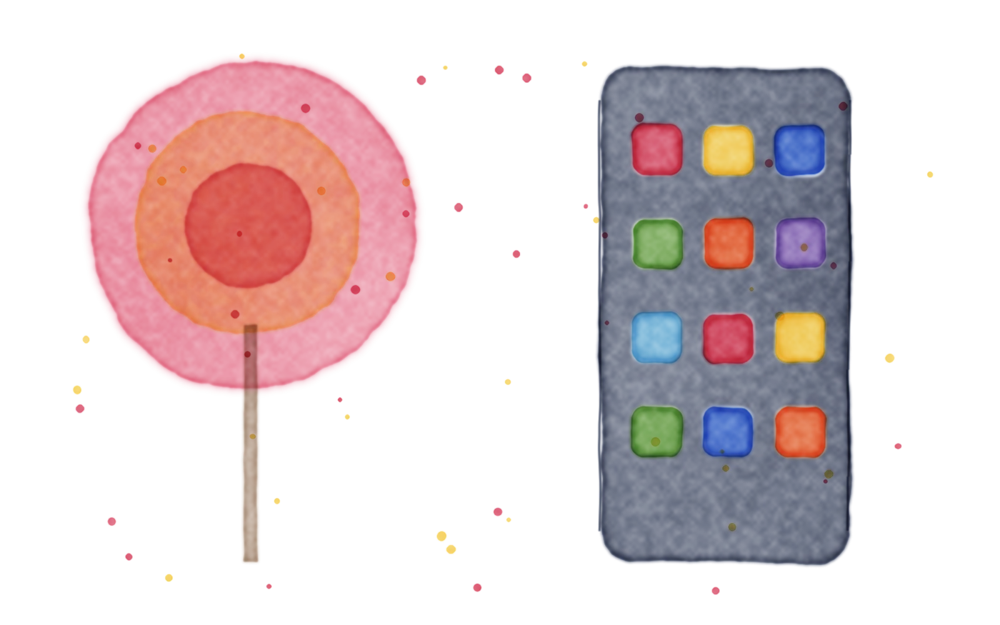
The shared recipe
Take a human need and turn three dials.
Food meets a need to eat. Social media meets a need to connect and to learn something new. The need is fine. Somebody turned the dials.
Humans get more hooked on rewards that are unpredictable. It is the same mechanism behind slot machines, and, Yousef says, behind love-bombing in toxic relationships. The algorithm, as she describes it, holds back the content it knows you will love, serves you so-so posts while you are fresh, and plays the jackpot right before you would quit.
This toy feed works the way Yousef describes. Watch your boredom meter, and watch when the good stuff shows up.
Press scroll. Space or the down arrow works too.
Distraction does not only come to us. We also go looking for it. When work gets hard, the brain tries to solve the discomfort, which is its job. Facing the problem is hard. Escaping is one tap away. The phone has become, in Yousef's words, a fast and cheap exit from reality.
Steven brought up a 2014 study (Wilson and colleagues, Science, 2014). People left alone with their thoughts for 15 minutes could press a button to give themselves a mild electric shock, one they had said they would pay to avoid. In the paper's numbers, 67% of the men and 25% of the women pressed it anyway, and one man did it 190 times.
Yousef's answer is no shame. “You have literally hundreds of experts that have designed these tools to be as addictive as they are.” A brain that gets hooked is working as designed.
Yousef calls it the reverse UNO, after the card that flips the game back on whoever played it. They used the brain's wiring to hook us. We can use the same wiring to get free.
Kevin O'Leary once told Steven that Steve Jobs could always separate the signal, the one thing that matters today, from the noise, which is everything else. Jony Ive's version was that focus means saying no to an idea you know is brilliant, because it isn't what you're working on.
Yousef then asked Steven a question. You can turn up the signal or turn down the noise. Which is easier? “Decreasing the noise,” he said. She agreed. So the order here is the foundation first, then less noise, then more signal.
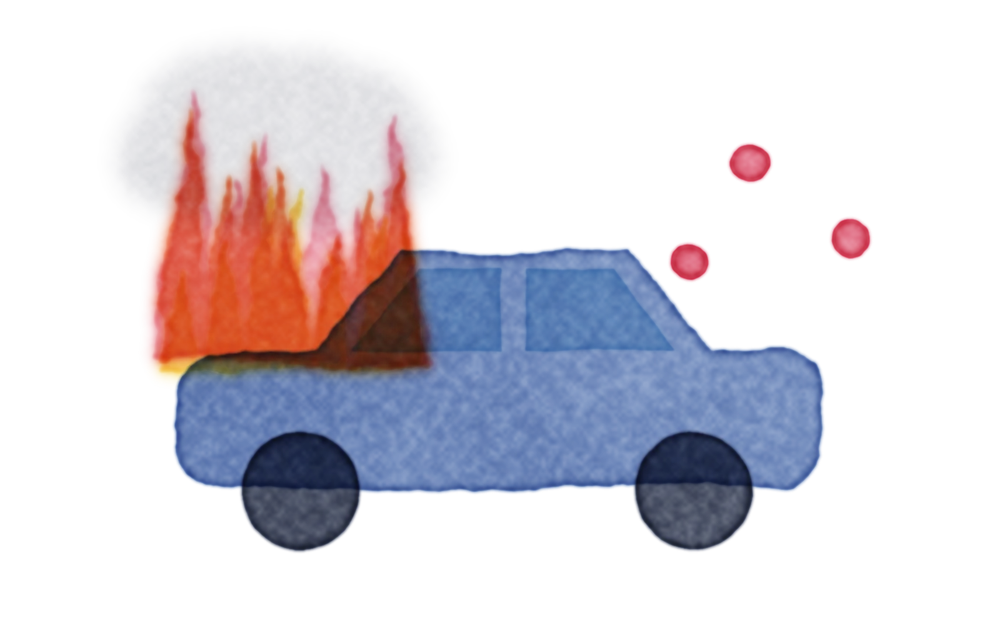
1 · Sleep
Founders come to Yousef asking for a 1% edge on five hours of sleep a night. She compares it to a car brought in for a performance tune-up while the engine is on fire. Put the fire out first.
Short sleep hurts thinking and emotional control. Until it is fixed, she can't even measure your baseline.
2. Make your phone gray. Grayscale is a setting on every phone, usually under Accessibility. Without color, the phone looks dead to you, as she put it, and far less stimulating, especially late at night when willpower is low. In her lab, healthy working professionals who switched to gray for three weeks used their phones about an hour less per day. That is her lab's figure; other studies have found smaller drops, but the direction is the same.
3. Notifications off, except VIPs. Steven asked what happens when something urgent comes in. Yousef's answer comes from the post office.
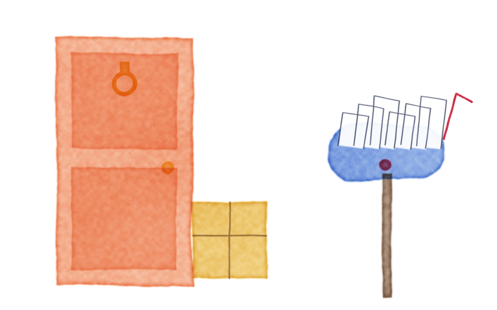
A package that needs a signature gets a knock. Everything else goes in the mailbox.
Pick your VIPs: partner, boss, boss's boss, maybe your top 15 clients. Let only them break through, on phone and email. Yousef also flags a few keywords, like her first name. Being CC'd on seven people solving their own problem is mailbox.
4. Put the phone out of sight. Steven locked his in a box at the start of the interview. You don't need a box. Distance does it. Yousef compares it to setting a beer in front of someone trying to get sober. Steven's is Skittles. He doesn't keep them in his pocket, because he'd eat them every time he got bored.
5. Choose long form over short form, and people over feeds. Yousef is not anti-screen. A good film has been shown to build empathy in young people. Too much short form, she argues, leaves people more anxious and less sharp. Watching a movie? Watch the movie, without the phone.
Both sit on a need that's real enough. If the hunger is for company, have dinner with someone who talks back. Do that, she says, and you'll find you crave the feed less. Steven added Jack Dorsey's old metric for Twitter, regrettable minutes: did that hour leave you better off?
Put your phone in gray… People spent 1 hour less on their phones every single day. That's 7 hours a week.
Cutting noise frees attention. The signal is what you point it at. Yousef works through what matters, then how to do it, then when. The tenth rule, one task at a time, is the one you tested in Part I.
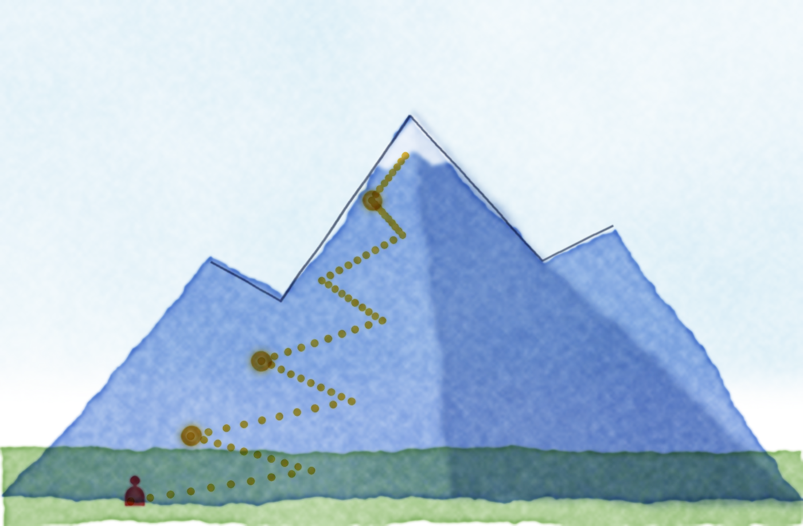
6 · Your Everest
If you can't tell which of your 69 to-dos matters most, step back. Where do you want to be in five years? Steven called it your Everest, and she took the word and ran with it. She gets there by making you picture your deathbed, at 110.
Steven tried it on air, eyes closed. First he noticed who was in the room, then what they thought of him. He came out with three priorities: a big family, being a role model his kids could point to, and proof that his time here was a net positive for the planet. Yousef's own answer: to have loved deeply, and to have served.
At 110, looking back, what must have happened?
Then write down the one to three tasks that would move you toward it today. Those are your MITs. Three is the limit, on purpose.
Hospice nurse Bronnie Ware kept a log of what her dying patients regretted. Top of the list was not living a life true to themselves, and caring too much about what others thought.
Family, and having a big family. Being a good role model to them. And them having evidence that me being here was net positive.
Your MITs
Each morning, treat your to-do list like a fridge. How much focus time do you have today? Then pick one to three MITs, most important tasks: the ones that would make today a success. Her lab has studied another way to ask it: “What will your future self thank you for?”
Everything else is a LIT, a least important task, like the DocuSign or the toilet-paper order. LITs feel good because they give fast dopamine. They fill the gaps between meetings. Your best uninterrupted hour goes to an MIT.
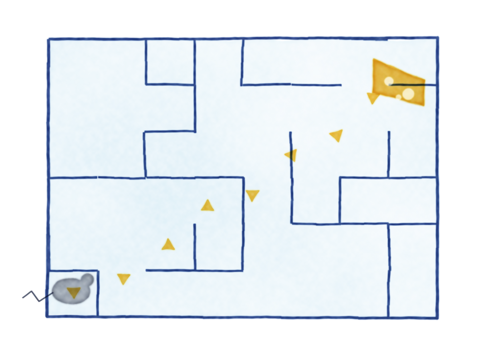
Sprinkle the cheese through the maze.
An MIT is a long maze with a big hunk of cheese at the end. A LIT is a crumb right in front of you. So break the MIT into crumbs, each one paying out a little progress.
Kilimanjaro guides told Yousef's husband the same thing: pole pole, Swahili for “slowly, slowly.” Steven's version, from Sir Dave Brailsford, is pedals over podiums.
7 · The focus sprint
Yousef's method for deep work. Her lab found it helps people get up to twice as much done, with fewer mistakes. It has five steps.
The center point of your influence on this planet is the allocation of your time.
The timer isn't there to stress you. It compresses the work so you get your evenings back, which is where the deathbed priorities live.
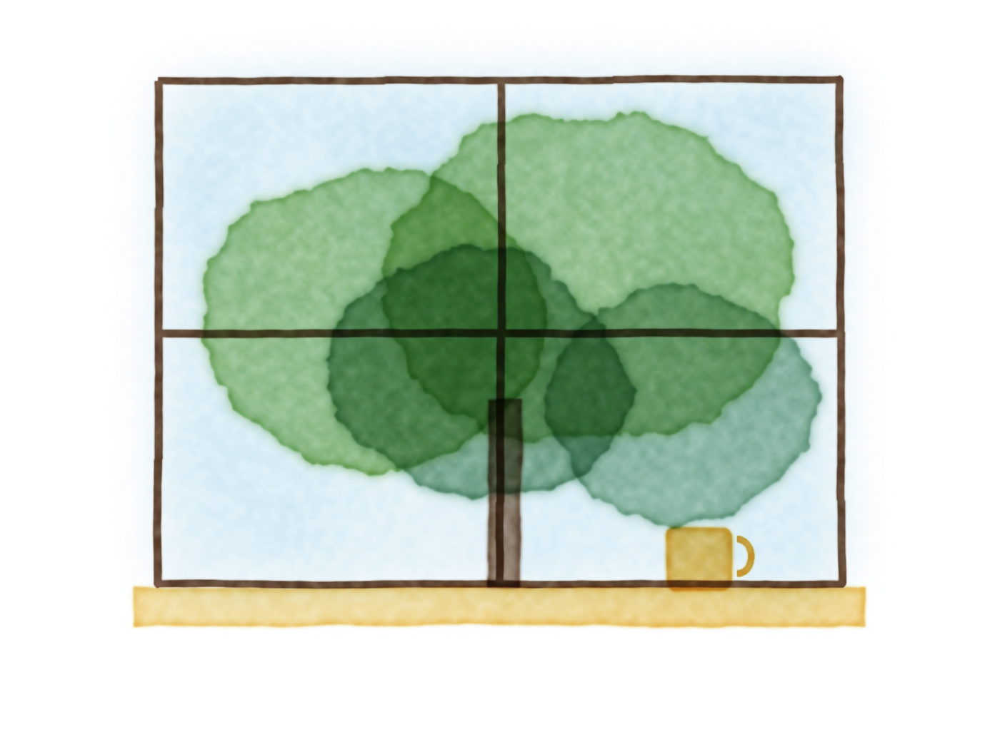
8 · The brain break
A brain break is a short stretch with no information coming in. Scrolling is not a break. It's like resting between sets by lifting lighter weights. Reading the news counts as lifting too.
Yousef describes a 2024 paper in Nature that measured fatigue after work and compared four kinds of break.
Ranking as described in the episode. The page shows order only, not effect sizes.
Yousef prefers systems to willpower. Can't do nothing? Use your hands. Skip the grab-and-go snacks: cut the cheese from the block, boil the kettle. If both hands are busy, you can't scroll. Steven's break is learning to DJ, which locks him in completely.
For hard problems, the same principle helps creativity. Load the problem fully, then walk away: shower, or walk the dog. A new setting loosens the networks stuck on the problem, and the idea shows up.
9 · Your chronotype
Your attention span is not constant. You are a different version of yourself at 8 a.m., 2 p.m. and 8 p.m. Yousef describes three chronotypes, with the population shares she cites.
Both Steven and Yousef are night owls. When she mentioned that PM-shifted people tend to be the most artistic and creative, Steven grinned: “Look at the camera and say that again.” He never records before 11 a.m. He once took a key meeting at 7 a.m. and called his own performance terrible.
Curves are illustrative shapes drawn from her descriptions, not measured data. Shaded band = best window for focus sprints.
Why this is bigger than productivity.
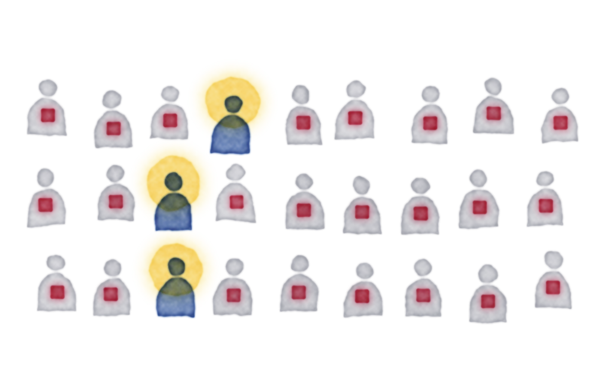
Steven held up an email Yousef once received from a tech company. It praised her research on strategic automaticity, the science of making behavior automatic, and asked for help making their product “more sticky.” The attached offer was four times her salary as a public researcher. She says she has been courted more times than she can count, and she doesn't think the people asking are evil. The incentives are simply that strong.
Her fear comes from conversations with leaders in AI. Unless something changes, she warns of a future with a “thinking class”: a small group with the education and attention span to think critically, ask questions and generate ideas. Everyone else is expected to do as they're told. A distracted population is easier to control.
The last century widened the thinking class, especially for women and girls. She believes it is now shrinking again, because of algorithms and AI. AI is taking thinking away from us, she says, “because we're letting it.”
Digital dependence is going to be the Everest for our species.
Why is it so tempting to hand our thinking over? The brain is wired for shortcuts, because energy used to be scarce. Yousef quotes a line attributed to Daniel Kahneman: thinking is to humans as swimming is to cats. They can do it, but they'd prefer not to.
Steven shared a story from his own team. He told a colleague that their reasoning was much stronger in person than in the documents they sent, which read like AI. The person knew more real-world context than the model did. The temptation to let a chatbot think for you will only grow, so he treats resisting it as a skill.
Her first step is to measure. We get an annual physical and a blood test, she points out, but never check our minds. Her institute, the Mind, Machine & Meaning Institute, offers free attention and digital-dependence assessments at mmminstitute.org.
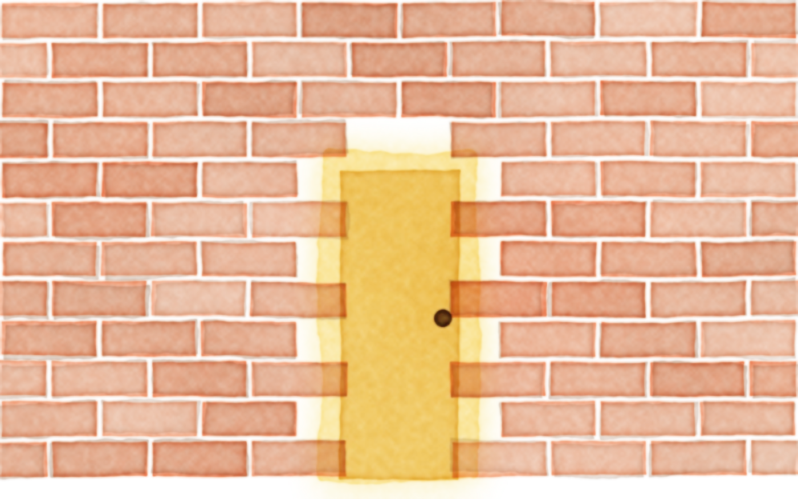
Coda · How to get luckier
The episode ends with a question left by the previous guest: how can the audience become more lucky?
Her answer was the same mechanism, run the other way. The mind is a focus machine that looks for evidence of what it already holds. If it's full of noise or a victim story, you notice closed doors. Keep your Everest and today's next step in view and you start spotting chances. That is turning the signal up.
Steven started chanting “I'm a lucky person.” She let him finish, then said that was manifestation, which is fine if you're into it, but she wanted to push him further. Did he have a guest he'd never managed to land? Barack Obama, he said. Keep that top of mind, she told him, and one day he'd bump into one of Obama's former chiefs of staff.
“The world is not full of brick walls. Those brick walls are doors. They have handles.”
Brain fog has a cause. The average knowledge worker lasts about 47 seconds on one screen.
First, measure. Yousef's institute offers free attention and digital-dependence tests at mmminstitute.org.